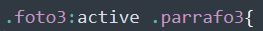
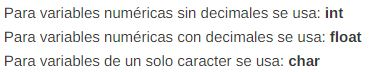

funcionamiento de ítems
Funciones
Una función es un bloque de código que realiza alguna operación, las funciones son útiles para encapsular las operaciones comunes en un solo bloque reutilizable, idealmente con un nombre que describa claramente lo que hace la función
Variables
Una variable ocupa un espacio de memoria reservado para contener sus valores durante la ejecución del programa. Cada variable debe pertenecer a un tipo de dato determinado, y ese tipo determina, por una parte, el tamaño del espacio de memoria ocupado por la variable y por otra el modo en que se manipulará esa memoria
Tipos
En Dev C++ podemos usar varios tipos de variables, y cada uno corresponde a un tamaño máximo de un número, un carácter o incluso una proposición lógica, Cuanto mayor sea el número que pueda admitir, más espacio en memoria ocupará.
Int: Para valores tipo números enteros
float: Para valores tipo números no enteros, o con decimales, por ejemplo
char: Para valores tipo carácter. Un carácter es un símbolo, como los que usamos para escribir
Estructuras logicas
Una estructura lógica es una agrupación de instrucciones con el fin de hacer su manejo más fácil. Su característica principal es que a ella se llega por un único punto y desde ella se parte o abandona por un único punto
Eventos CSS
se considera cualquier acción que el usuario realiza con el sistema: hacer click, posicionarse con el ratón en un lugar determinado, enviar un formulario, posicionarse en un cuadro para texto, en este periodo vimos dos eventos, el hover y el active
Hover= coincide cuando el usuario interactúa con un elemento con un dispositivo señalador, pero no necesariamente lo activa. Generalmente se activa cuando el usuario se desplaza sobre un elemento con el cursor
Active= representa un elemento (como un botón) que el usuario está activando. Cuando se usa un mouse, la "activación" generalmente comienza cuando el usuario presiona el botón primario del mouse y termina cuando se suelta
Animaciones
permiten animar la transición entre un estilo CSS y otro. Las animaciones constan de dos componentes: un estilo que describe la animación CSS y un conjunto de fotogramas que indican su estado inicial y final, así como posibles puntos intermedios en la misma
Diseño de menus
Un menú horizontal es muy útil cuando se trata de organizar páginas y subpáginas dentro de tu sitio web. El efecto se puede crear fácilmente usando CSS

